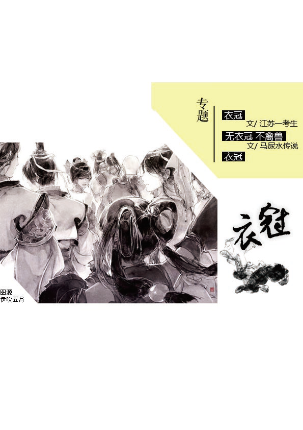
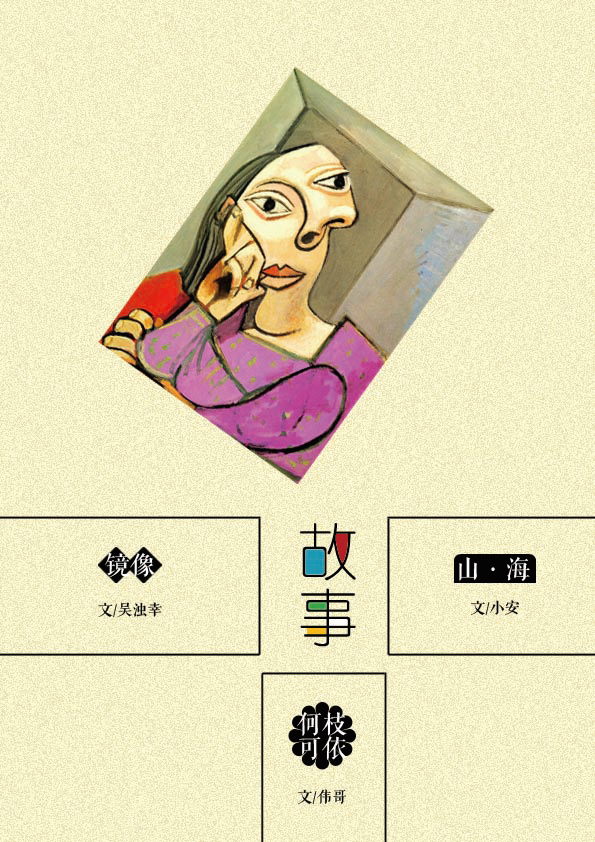
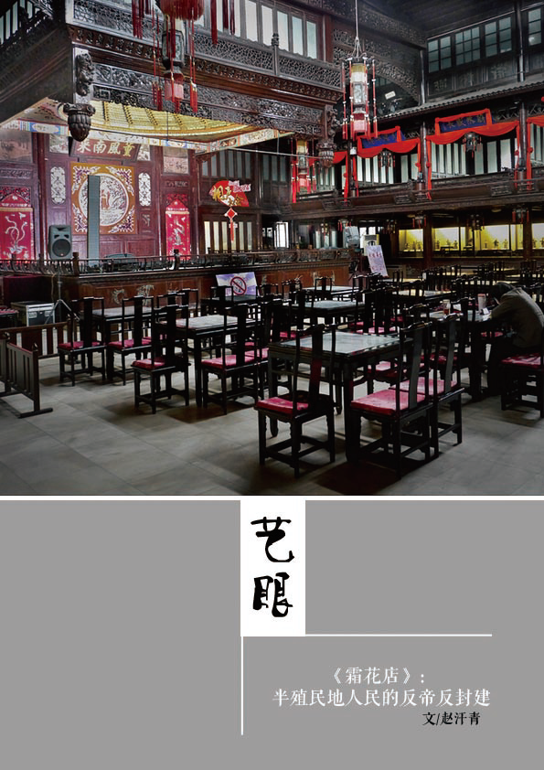

都是朴树惹出来的。或许也有张国荣和海明威的份。 “抑郁”成了一件华服。
最近，乔任梁离世。一夜之间，多少国人又“突然”意识到了自己身患抑郁症。《献给【完美+自卑+自恋+抑郁】的人群：我是如何抑郁症自愈的》《抑郁症患者日记》《说说我十七年的抑郁症生涯，供广大病友参考》《抑郁症组诗（外一首）》……
阅读全文
有一日，我喝了不少酒，在大街上懒洋洋地晃到了深夜。天空爬满了玻璃碴子，泛着幽蓝幽蓝的光。
“再来二两……”我听见前面有咕哝声，就走上前去。来者是个挂着大胡子的老男人，摇摇晃晃行疾如风，估计磕多了寒食散。衣服是古式，又破又薄，还沾着昏黄的酒渍。
阅读全文
晚秋的风里，午夜的钟发出十二声薄而脆的响。
韩生被噩梦惊醒，梦里他看着那个天生重瞳的男人，建议他定都关中，男人不愿意衣锦夜行，他小声的嘀咕着“沐猴而冠”，却被那男人听到，下令把他烹了。锅里的热油烧得焦灼，他听着噼里啪啦的柴火声，一下子惊醒了。
阅读全文
就像至尊宝，一遍又一遍梦见山洞、石头、水波潋滟……不管在哪里，不管混的怎么样，有关家乡的那些意象，自始至终勾兑在血液里，不知在哪个时刻就会强烈发酵，浓烈的味道挥之不去。
转世人脑海中朦胧的水帘洞，是异乡人脑海中清晰的大中农场。
阅读全文
盘桓于那个岛屿上,伴随着每一场落雾与起风的,只有那些黏稠稠,湿漉漉的乡愁——“葬我于高山之上兮,望故乡,故乡不能见兮,永不能忘;葬我于高山之上兮,望大陆,大陆不能见兮,唯有痛哭”
台北街道的名字很有意思,设计师把中国地图放在台北街道图上,中轴线对准中山南北路,把一个个萦绕在客居人心头的地名,把一缕缕曾承载了母亲细密针线的乡愁,郑重地变成了台北的街道名。
阅读全文
阅读全文
请给我 你手边最近的那颗苹果
若你不想说话 尽可以沉默待我
你要记住我谋生的方式
油亮的制服
我的口音 我的家乡
我的名字
但不要记得我会从一盘蔬菜里剔出菜籽
不要记得我为何而得意忘形地谈论
又为何在人群中沉默
阅读全文
《你的名字》继风靡日本之后，在十一月的中国，也掀起了堪称狂热的浪潮，称之为2016最火的动画电影也不为过。
《你的名字》为什么这么火？
阅读全文
随着民权运动的推进，对黑人群体的补偿也逐步提上了日程。纵观历史，我们可以看到美国政府的不断让步——又或者说对正义的实践。
没有什么不比平等更政治正确的了，正因如此，所谓的补偿/赔偿(reparation)显得如此天经地义。
阅读全文
至今还记得宿舍哥几个准备集体拼一次——亲眼目睹《午夜凶铃》。
樊总管晃悠晃悠地做映前准备，大白天的又关门又拉窗帘，嘴角带着诡异的笑。我惊叫，“你这是要玩命啊！”他很不屑，“恐怖片，就要恐怖点看！”
我决定靠门站。
阅读全文

「我现在喜欢定期回忆和凭吊过去的某个时刻，曾在那里自得其乐的地方，喜欢按已经一去不返的往昔格局来建立现在。」
我照例等在门外的电话亭旁。
安裹着深褐色的衬棉大衣从黑暗阴沉的厅室里小跑出来的时候，我正试图将我的全部力量集中于右肩的某一个点上，希望可以借那个点的倚靠来平衡我的身体。
阅读全文
我飞过一片阴沉的天空。浓密的云层轰隆隆地撞击，是巨人沉痛的笑。
我停下，伫立在我面前的是一尊庞然大物，岩石般的身躯只能勉强辨认出人形，而抬眼望去，本来应有头颅的所在却是一望无际的黑暗与空无，我不禁发问：
“你是谁？你为什么会在这里？”
阅读全文
关中大书房停业的时候，钟爷看着门闸一扇一扇落下，霞光在沙土地上被一道一道切断，直到四周无光的时候，宛若丧家犬。
十年前，大书房开业，门闸一道一道被拉开，晨曦穿透渭河平原薄而冷的雾，落在红绸缎上，红绸缎子下面是一人高的大车轱辘，老钟远远地站在街角，瞅见那缕晨光，一心欢喜。
阅读全文

一位少年君王问孩子们：“何为天下之至忠？”
有人答是做大将军，收复故土；有人答要勤于练武，保卫君王。
一个眼睛大而无辜的孩子不安地嗫嚅道：“愿为殿下牺牲生命，在所不惜。”
那一刻，王的神情里有讶异、惊喜，和疑惑。
阅读全文
“我们只能把它卖了，”我记得母亲不容置辩地说道，
“冬天长着呢，我到时一个人在这儿，只留下这几个孩子帮我。另外，它食量太大，给牲口的饲料我们本来就不够。”
阅读全文